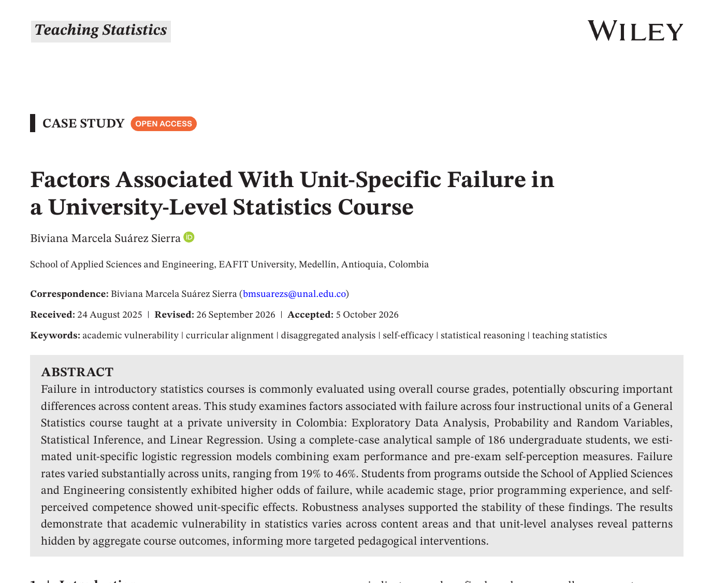
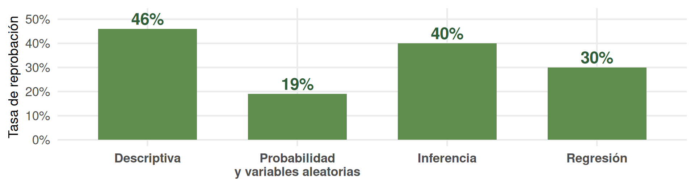
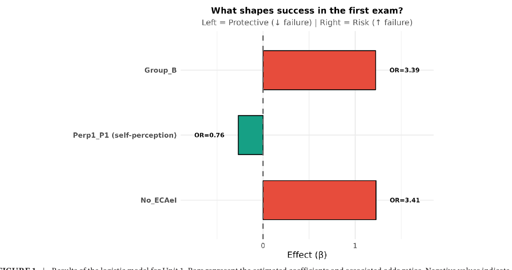
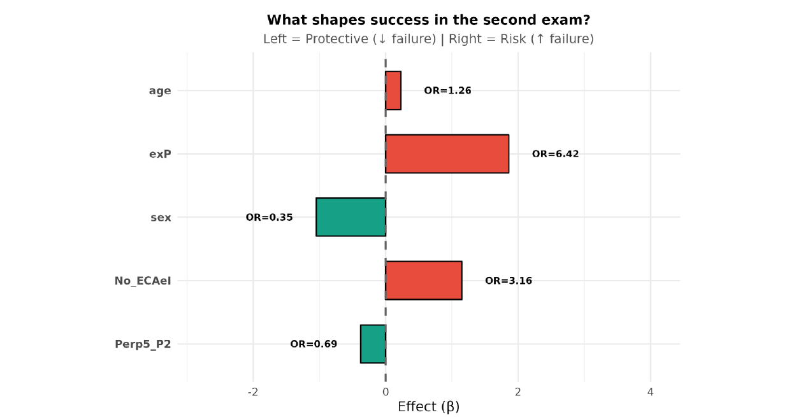
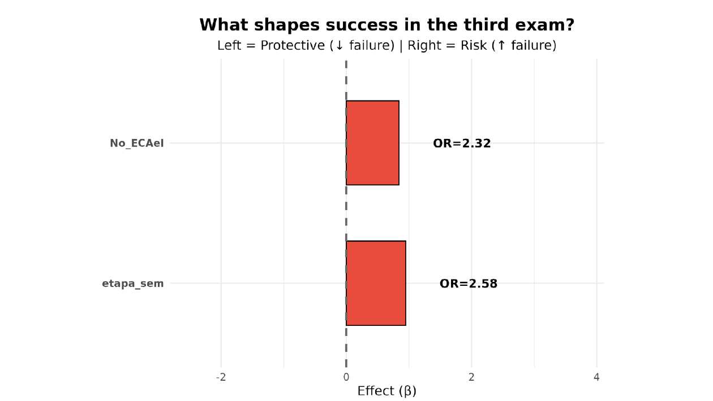
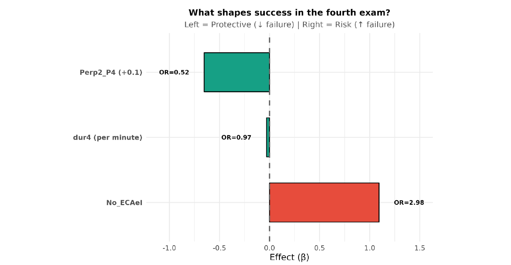
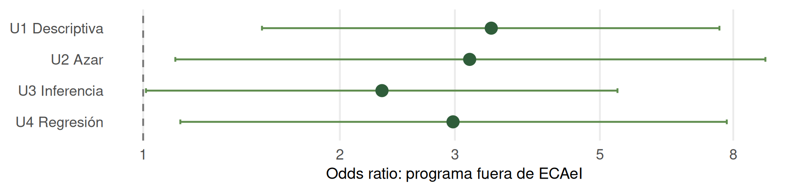

Conferencia LIV JEM · Licenciatura en Matemáticas UPN
Una nota final no cuenta toda la historia
¿Dónde fracasa el aprendizaje de la estadística?
Biviana Marcela Suárez Sierra Profesora asistente · Departamento de Matemáticas Universidad de los Andes Egresada de la Licenciatura en Matemáticas · UPN
10 de noviembre de 2026 · 4:00 p. m. Universidad Pedagógica Nacional · Calle 72
El artículo detrás de esta charla

Recorte de la primera página de la versión publicada en Teaching Statistics (Wiley, 2026).
Teaching Statistics · Wiley
Factors Associated With Unit-Specific Failure in a University-Level Statistics Course
Biviana Marcela Suárez Sierra Publicado en línea: 25 de octubre de 2026 DOI: 10.1002/test.70055
Idea central del artículo: una nota global puede ocultar diferencias sustantivas entre contenidos y, por tanto, ocultar cuándo, en qué y para quién aparece la vulnerabilidad académica.
Artículo publicado
La pregunta que motiva el trabajo
¿Dos estudiantes con la misma nota final tuvieron realmente la misma experiencia de aprendizaje?
Estudiante A
Unidad
Nota
Descriptiva
2.3
Probabilidad
4.1
Inferencia
2.5
Regresión
4.0
Estudiante B
Unidad
Nota
Descriptiva
3.4
Probabilidad
3.2
Inferencia
3.1
Regresión
3.2
Ejemplo conceptual: el promedio puede ser parecido y, sin embargo, los perfiles de aprendizaje ser radicalmente distintos.
Marco teórico: aprender estadística es multidimensional
Cognitiva
Preparación matemática y computacional, razonamiento estadístico, integración conceptual y etapa académica.
Afectiva
Actitudes, autoeficacia, competencia percibida, interés, esfuerzo y dificultad percibida.
Pedagógica
Sección, prácticas de enseñanza, evaluación, laboratorio, contextualización y secuenciación de contenidos.
Contextual
Programa académico, trayectoria previa, características demográficas y entorno educativo.
El artículo organiza los predictores en estas cuatro dimensiones como un marco interpretativo, no como compartimentos mutuamente excluyentes.
1 · Razonamiento estadístico y dificultad conceptual
Muchos estudiantes desarrollan destreza procedimental sin una comprensión conceptual profunda.
Datos pueden ser vistos como valores aislados, en lugar de un agregado con propiedades emergentes.
La variabilidad se reduce con frecuencia a “calcular una desviación”, sin conectarla con muestreo e inferencia.
Inferencia exige integrar distribución, muestreo, incertidumbre y variabilidad.
Datos + contexto
↓
Alfabetización estadística
↓
Razonamiento estadístico
↓
Pensamiento estadístico
Garfield y Ben-Zvi: enseñar estadística no puede reducirse a una colección fragmentada de técnicas; se necesita integración conceptual.
Garfield & Ben-Zvi (2007); Garfield et al. (2008); Olani et al. (2011).
2 · Actitudes, autoeficacia y competencia percibida
Autoeficacia: creencia del estudiante sobre su capacidad para realizar con éxito una tarea específica.
Puede afectar persistencia, dedicación y respuesta frente a la dificultad.
La competencia cognitiva percibida se ha asociado con desempeño en estadística.
Las actitudes pueden ser resistentes al cambio e incluso deteriorarse durante el curso.
El SATS-36 organiza actitudes en Afecto, Competencia cognitiva, Valor, Dificultad, Interés y Esfuerzo.
Importante: en este estudio no se aplicó el SATS-36 completo. Antes de cada examen se preguntó por la competencia percibida en resultados de aprendizaje específicos de esa unidad.
No es lo mismo preguntar “¿soy bueno para estadística?” que “¿me siento capaz de probar e interpretar un coeficiente de regresión?”.
Bandura (1997); Finney & Schraw (2003); Dempster & McCorry (2009); Gal & Ginsburg (1994); Ghulami et al. (2015).
3 · Diferencias disciplinares y diseño pedagógico
Diferencias disciplinares
Estudiantes de áreas STEM suelen llegar con mayor exposición matemática y computacional.
En programas no cuantitativos pueden coexistir menor preparación previa, menor confianza y mayor ansiedad estadística.
Las habilidades matemáticas básicas han mostrado una asociación importante con desempeño en cursos introductorios.
Modernizar la enseñanza
Menos énfasis exclusivo en cálculo manual.
Más interpretación, argumentación y toma de decisiones en contextos auténticos.
Proyectos y actividades aplicadas.
Integración entre clase y laboratorio.
En este curso, el pensamiento computacional con R tiene un papel central.
Esto lleva a una hipótesis pedagógica fuerte: los factores asociados al fracaso pueden depender del contenido que se esté aprendiendo.
Rabin et al. (2021); Fabbricatore et al. (2023); Burns & Hammond (2019).
El diseño del estudio
186
estudiantes en la muestra analítica común
4
unidades y cuatro evaluaciones digitales
3.0/5.0
umbral institucional de aprobación
Antes de cada examen: encuesta breve de autopercepción sobre los resultados de aprendizaje de la unidad. Modelación principal: cuatro regresiones logísticas, una por unidad. Predictores: variables de preparación académica, autopercepción, contexto, sección y condiciones del examen.
Diseño observacional: se interpretan asociaciones, no efectos causales.
La primera señal: la reprobación cambia por unidad

46%, 19%, 40%, 30%: la vulnerabilidad académica no es homogénea durante el semestre.
Incluso dentro de una unidad, no todo cuesta igual
23.66%
resolvió correctamente el ítem que combinaba tendencia central, posición y dispersión
6.45%
resolvió correctamente un ejercicio integrador de pruebas de hipótesis
47.31%
resolvió ejercicios de regresión lineal e interpretación de correlación
Otros resultados de Inferencia: 39.25% en distribución muestral de la varianza; 21.51% en intervalos de confianza generales; 43.55% en intervalos para la varianza.
Desagregar permite localizar cuellos de botella conceptuales, no solo asignar una etiqueta global de “aprobó/reprobó”.
el predictor se asocia con mayores odds de fracaso.
Si \(\beta<0\)
disminuyen los log-odds de reprobar;
\(e^{\beta}<1\);
el predictor se interpreta como un factor protector.
Odds no es probabilidad. Un OR de 3 no significa “tres veces más probabilidad”; significa tres veces las odds, manteniendo constantes las demás variables.
Ejemplo con coeficiente positivo: mayor riesgo
Unidad 1 · Programa fuera de ECAeI
\[\beta=1.226\]
\[OR=e^{1.226}\approx 3.41\]
Interpretación de \(\beta\): pertenecer a un programa fuera de ECAeI aumenta en 1.226 los log-odds de reprobar, controlando los demás predictores.
Interpretación del OR: las odds de reprobar son aproximadamente 3.41 veces las de estudiantes de ECAeI.
¿Qué NO debemos decir?
“Tiene 3.41 veces más probabilidad”.
“El programa causa la reprobación”.
¿Qué sí podemos decir?
La asociación es consistente y reaparece en las cuatro unidades, lo que motiva discutir alineación curricular y trayectorias disciplinares.
Ejemplo con coeficiente negativo: efecto protector
Unidad 4 · Competencia percibida en pruebas sobre coeficientes
Coeficiente en escala completa: \(\beta=-6.524\).
Para un aumento más realista de 0.1 en la escala:
\[\Delta\text{log-odds}= -6.524(0.1)=-0.6524\]
\[OR_{0.1}=e^{-0.6524}\approx 0.521\]
Las odds de reprobar se reducen aproximadamente en
\[1-0.521=0.479\;\Rightarrow\;47.9\%.\]
Lectura pedagógica
Una mayor confianza específica en la capacidad de plantear e interpretar pruebas sobre coeficientes de regresión se asoció con menor riesgo de fracaso.
La variable mide una creencia sobre una competencia concreta; no demuestra que “sentirse seguro” por sí solo cause mejor desempeño.
Gráfica del estudio · Unidad 1

¿Qué vemos?
No_ECAeI: coeficiente positivo y OR = 3.41 → factor de mayor riesgo.
Grupo_B: coeficiente positivo y OR = 3.39, aunque con estimación imprecisa por el tamaño de esa sección.
Perp1_P1: coeficiente negativo; por +0.1 en autopercepción, OR = 0.764 → efecto protector marginal.
Figura 1 de la versión publicada en Teaching Statistics.
Gráfica del estudio · Unidad 2

Probabilidad y variables aleatorias
Sin experiencia previa en programación:\(\beta>0\), OR = 6.42.
Programa fuera de ECAeI: OR = 3.16.
Edad: OR = 1.26 por año.
Sexo (grupo codificado masculino): \(\beta<0\), OR = 0.346.
Perp5_P2 (+0.1):\(\beta_{0.1}=-0.375\), OR = 0.687; efecto protector marginal.
La ausencia de programación tiene la mayor estimación puntual, pero con IC 95% 1.37–30.09: la magnitud exacta es imprecisa.
Figura 2 de la versión publicada en Teaching Statistics.
Gráfica del estudio · Unidad 3

Inferencia estadística
Ambos coeficientes mostrados en la figura son positivos.
Programa fuera de ECAeI: OR = 2.32.
Etapa temprana del programa: OR = 2.58, pero IC 95% 0.913–7.30; por tanto, se interpreta como hallazgo marginal.
La discusión no es solo individual: también es curricular. ¿Cuándo conviene ubicar Inferencia en el plan de estudios?
Figura 3 de la versión publicada en Teaching Statistics.
Gráfica del estudio · Unidad 4

Regresión
Perp2_P4 (+0.1): coeficiente negativo, OR = 0.521 → reducción aproximada de 47.9% en las odds de reprobar.
Duración (+1 min): coeficiente ligeramente negativo, OR = 0.971 → reducción aproximada de 2.9% en las odds.
Programa fuera de ECAeI: coeficiente positivo, OR = 2.98.
Esta figura permite ver en una sola imagen un \(\beta<0\) protector y un \(\beta>0\) de riesgo.
Figura 4 de la versión publicada en Teaching Statistics.
El patrón que sí atraviesa las cuatro unidades

La persistencia del efecto sugiere una fuente de vulnerabilidad estructural/contextual, no una dificultad confinada a un único tema.
Los demás factores sí dependen del contenido
Unidad
Factores que destacan en la publicación
U1 · Descriptiva
Programa; sección; autopercepción sobre reconocer la naturaleza de los datos
U2 · Azar
Programa; edad; experiencia en programación; sexo; autopercepción sobre variables aleatorias
U3 · Inferencia
Programa; etapa temprana del plan de estudios
U4 · Regresión
Programa; duración del examen; autopercepción sobre pruebas para coeficientes
La vulnerabilidad académica es dependiente del contenido: distintos factores se vuelven relevantes cuando cambia la competencia evaluada.
Robustez: ¿es solo un artefacto de la estructura de los datos?
744
observaciones en formato largo 186 × 4
ICC=.073
dependencia intraestudiante en el modelo nulo
p=.500
el intercepto aleatorio no mejoró el ajuste tras incluir covariables
p=.711
interacciones Unidad × Programa no mejoraron significativamente el modelo
Además, en el modelo conjunto para U2–U4, la autopercepción siguió asociada con menor riesgo (OR = 0.844 por +0.1; IC 95% 0.768–0.928) mientras que el desempeño previo no fue significativo (OR = 1.402; p = 0.122).
Los hallazgos principales permanecen estables al considerar dependencia intraestudiante, desempeño previo y sección/instructor.
Discusión: cuatro dimensiones vuelven a encontrarse
Contextual El programa académico es el predictor más consistente. La brecha puede reflejar diferencias de preparación matemática/computacional, confianza y alineación curricular.
Cognitiva / preparación La experiencia previa y la etapa del programa importan en contenidos específicos; Inferencia parece exigir una base académica acumulada mayor.
Afectiva La competencia percibida funciona como factor protector en algunas unidades y conserva información propia incluso después de considerar el examen previo.
Pedagógica / curricular Variabilidad, inferencia y pruebas de hipótesis requieren integración conceptual y andamiaje progresivo; el curso no se vive como una secuencia uniforme de habilidades.
La discusión de la publicación interpreta explícitamente los resultados desde estas cuatro dimensiones.
¿Qué cambia para la enseñanza?
Antes y durante el curso
Diagnósticos tempranos de conocimientos previos.
Monitoreo por unidad temática, no solo por nota acumulada.
Tutorías y apoyos focalizados según el contenido.
Materiales contextualizados para poblaciones disciplinares distintas.
Diseño curricular
Revisar la alineación del curso de servicio con los programas que lo requieren.
Fortalecer razonamiento y conexiones conceptuales, no solo procedimientos.
Andamiar progresivamente los conceptos abstractos.
Incorporar reflexión metacognitiva y experiencias auténticas con datos.
La desagregación convierte la evaluación en una forma de learning analytics: permite intervenir cuando aparece la dificultad, no solamente registrar el resultado final.
Límites y agenda futura
Límites
Un curso y una institución.
Diseño observacional: no permite causalidad.
Resultados condicionados a la muestra completa de 186 estudiantes.
Algunos estimadores tienen intervalos amplios.
La desagregación mejora la resolución analítica, pero no elimina sesgo de selección potencial.
Lo que sigue
Incorporar asistencia, motivación, interés y estrategias de estudio.
Seguimiento longitudinal de habilidades estadísticas.
Explorar con más detalle la experiencia afectiva del estudiante.
Analizar el componente práctico en laboratorios de R, que representa el 40% restante de la nota final del curso.
Una nota final no cuenta toda la historia
Si queremos intervenir mejor, necesitamos mirar la trayectoria del aprendizaje, no solamente su resultado final.
Mensaje final: desagregar el desempeño por unidades permite identificar diferencias de dificultad, factores estructurales persistentes y predictores específicos del contenido que una nota global dejaría invisibles.
Bibliografía · I
Bandura, A. (1997). Self-Efficacy: The Exercise of Control. W. H. Freeman.
Burns, J., Aref, E., & Majd, M. (2020). Assessing instructional effectiveness and understanding factors that contribute to student performance in an engineering statistics course: An exploratory study. ASEE Virtual Annual Conference.
Burns, J., & Hammond, M. (2019). Work in Progress: Redesigning a Multidisciplinary Engineering Statistics Course. ASEE Annual Conference & Exposition.
Dempster, M., & McCorry, N. K. (2009). The role of previous experience and attitudes toward statistics in statistics assessment outcomes among undergraduate psychology students. Journal of Statistics Education, 17(2).
Finney, S. J., & Schraw, G. (2003). Self-efficacy beliefs in college statistics courses. Contemporary Educational Psychology, 28(2), 161–186.
Gal, I., & Ginsburg, L. (1994). The role of beliefs and attitudes in learning statistics: Towards an assessment framework. Journal of Statistics Education, 2(2).
Garfield, J., & Ben-Zvi, D. (2007). How students learn statistics revisited: A current review of research on teaching and learning statistics. International Statistical Review, 75(3), 372–396.
Garfield, J. B., Ben-Zvi, D., Chance, B., Medina, E., Roseth, C., & Zieffler, A. (2008). Developing Students’ Statistical Reasoning: Connecting Research and Teaching Practice. Springer.
Bibliografía · II
Arakawa, K., Hao, Q., Deneke, W., Cowan, I., Wolfman, S., & Peterson, A. (2022). Early identification of student struggles at the topic level using context-agnostic features. Proceedings of SIGCSE 2022, 147–153.
Axelsen, T., King, R., & Curtis, E. (2025). Visualising and evaluating learning/achievement consistency in introductory statistics. Cogent Education, 12(1), 2492727.
Fabbricatore, R., Parola, A., Pepicelli, G., & Palumbo, F. (2023). Successful factors in statistics learning for non-STEM courses students: A PLS-PM approach. Statistica Applicata, 34(2), 1–30.
Ghulami, H. R., Ab Hamid, M. R., & Zakaria, R. (2015). Students’ attitudes towards learning statistics. AIP Conference Proceedings, 1660, 050035.
Olani, A., Hoekstra, R., Harskamp, E., & van der Werf, G. (2011). Statistical reasoning ability, self-efficacy, and value beliefs in a reform based university statistics course. Electronic Journal of Research in Educational Psychology, 9(23).
Rabin, L. A., Krishnan, A., Bergdoll, R., & Fogel, J. (2021). Correlates of exam performance in an introductory statistics course: Basic math skills along with self-reported psychological/behavioral and demographic variables. Statistics Education Research Journal, 20(1).
Suárez Sierra, B. M. (2026). Factors Associated With Unit-Specific Failure in a University-Level Statistics Course. Teaching Statistics, 1–13. https://doi.org/10.1002/test.70055
Gracias
¿Preguntas?
Biviana Marcela Suárez Sierra
Departamento de Matemáticas · Universidad de los Andes